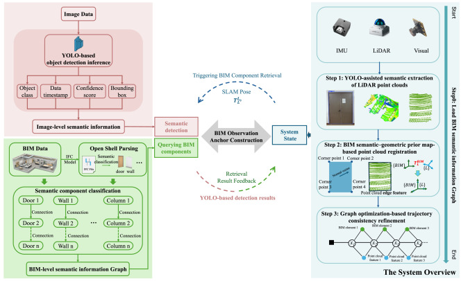

BIM-Priori — Integrating semantic–geometric BIM priors as knowledge constraints for robot localization and mapping
Advanced Engineering Informatics, vol. 77, article 105390, 2027. Published online.
A semantic LiDAR-inertial SLAM framework that screens BIM matches into reliable anchors and relative pose-graph constraints to improve map consistency and align robot trajectories with BIM.